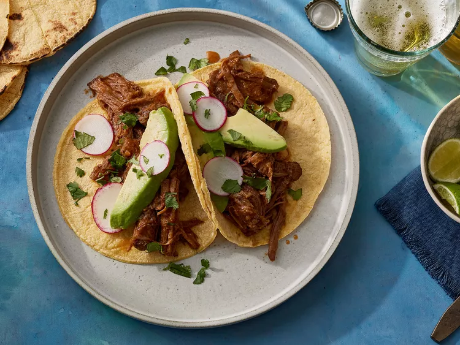

Barbacoa Tacos

Description
I have heard that you can't say you're American if you don't know or eat tacos. Got that idea from one of Trevor Noah's talk show, where he narrated his first experience with the meal.
Although, it is native to the Mexican, it is one of the common food in the US. Sadly, I am yet to experience this meal.
Ingredients
- 2 ripe plum tomatoes
- 1 small white onion, quartered
- 2 cloves garlic, peeled
- 4 chipotle peppers in adobo sauce
- 3 teaspoons kosher salt
- 1 ½ teaspoons chili powder
- 1 teaspoon ground cumin
- ½ teaspoon freshly ground black pepper
- 1 (3 pound) beef chuck roast, cut into 6-equal sized cubes
- 2 tablespoons olive oil
- 1 cup water
- 1 tablespoon light brown sugar
- 2 teaspoons dried oregano
- 3 fresh bay leaves
- 1 tablespoon lime juice
- corn tortillas, warmed
- 2 ripe avocados, peeled, pitted and sliced
- ½ bunch radishes, thinly sliced
- 2 tablespoons chopped fresh cilantro, or to taste
Direction:
- Step 1: Heat a large cast iron skillet over medium-high. Arrange whole tomatoes, onions (cut-side down), and garlic in the dry skillet in a single layer, working in batches if needed. Cook, turning occasionally, until charred on all sides, about 6 minutes for the garlic and about 12 minutes for the onions and tomatoes.
- Step 2: Transfer charred vegetables to a blender and add chipotle peppers. Process until smooth, about 1 minute.
- Step 3: Stir salt, chili powder, cumin, and black pepper together in a small bowl; season beef evenly with salt mixture.
- Step 4: Heat oil in a Dutch oven over medium-high heat. Add beef in batches and cook, turning occasionally, until browned on all sides, about 3 minutes per side. Transfer browned beef to a large plate.
- Step 5: Pour water into the Dutch oven and scrape up any browned bits from the bottom of the pan. Stir in onion-tomato mixture, brown sugar, oregano, and bay leaves. Reduce heat to medium-low and bring to a simmer.
- Step 6: Nestle beef back into pot and cover. Cook, stirring and re-nestling beef occasionally (about every 20 to 30 minutes), until beef is tender and pulls easily apart with a fork, 1 hour and 45 minutes to 2 hours and 15 minutes. Remove bay leaves and discard.
- Step 7: Remove beef from Dutch oven, place on cutting board; shred beef using 2 forks.
- Step 8: Return beef to the Dutch oven, add lime juice, and stir to combine.
- Step 9: Serve in corn tortillas with avocado, radishes, and cilantro.